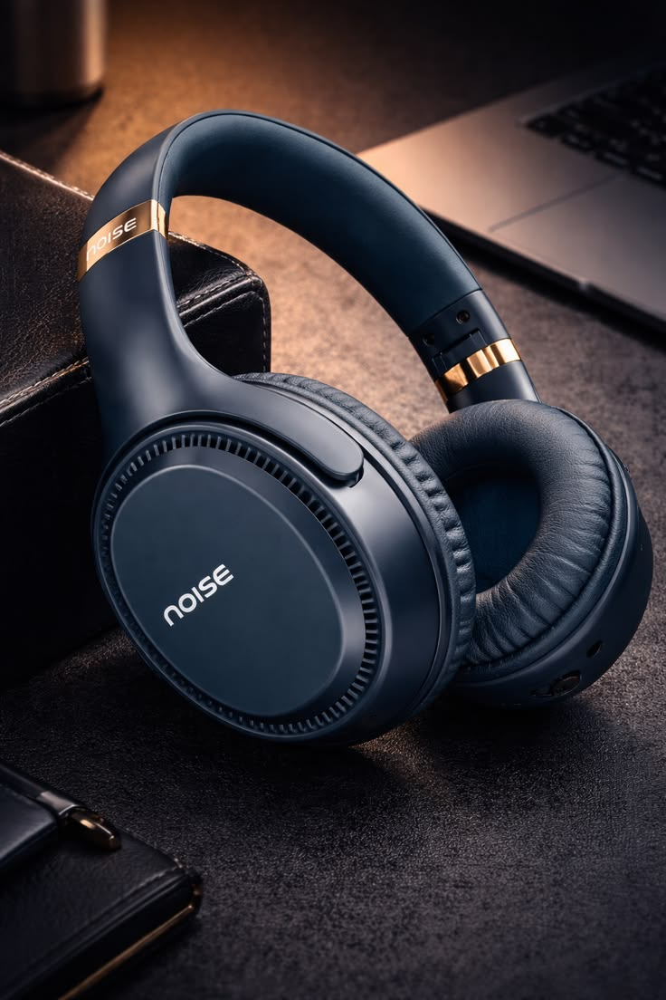
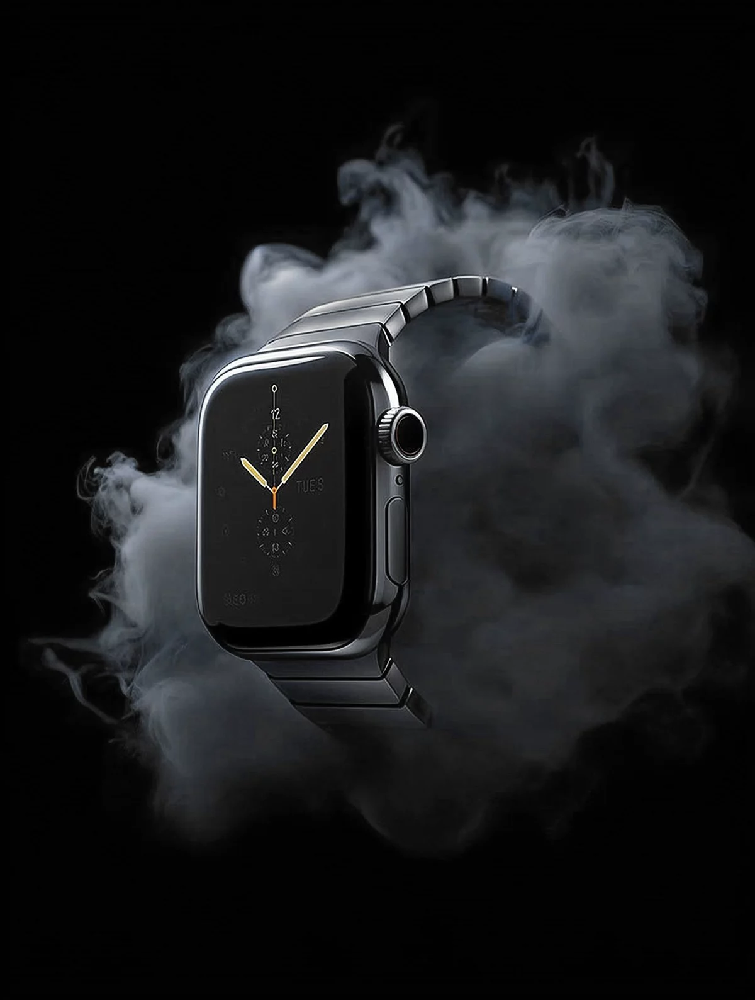
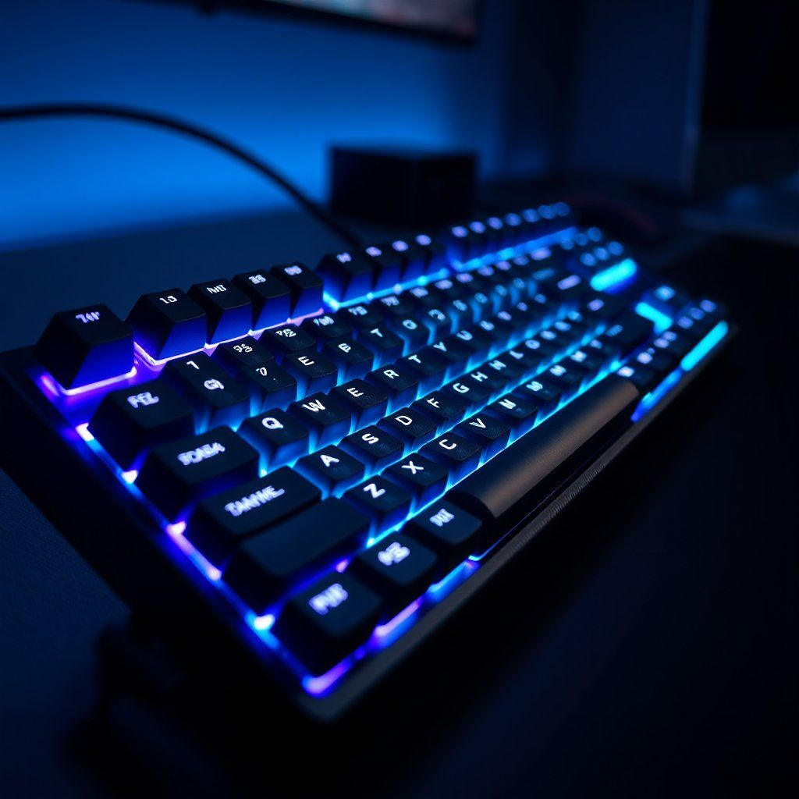
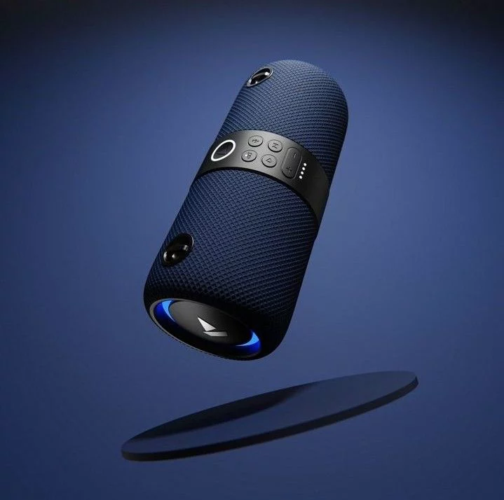
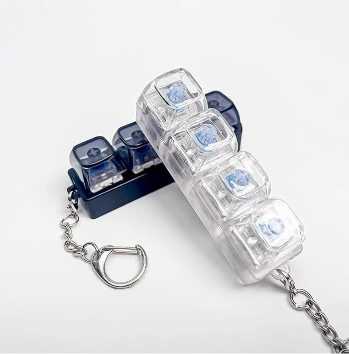

Wireless Headphones
Wireless headphones provide a comfortable and cable-free listening experience. They are popular for music, gaming, online classes, and travel purposes.

Smart Watches
Smart watches help users track fitness activities, notifications, and daily schedules. Their modern design and useful features make them popular among young users.

Gaming Keyboards
Gaming keyboards are designed with colorful lighting and fast response keys. They improve gaming performance and provide a stylish desktop setup.

Bluetooth Speakers
Bluetooth speakers offer portable and high-quality sound for music lovers. They are commonly used during travel, parties, and outdoor activities.

Digital Cameras
Digital cameras capture high-quality photos and videos with excellent clarity. They are widely used by travelers, vloggers, and photography enthusiasts.

Mechanical Keychains
Mechanical keychains are stylish accessories often designed with mini gadgets or tools. They are popular among students and bike enthusiasts for their unique appearance.